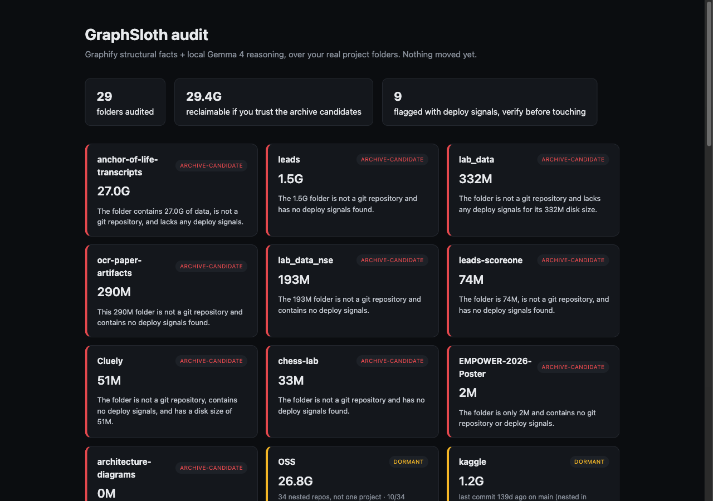

GraphSloth scans a folder of old projects, pulls real disk size, real git history, a real code graph, and real deploy signals, then asks a local Gemma model for a two-line verdict it has to justify with those facts. It never deletes anything.

Five steps, in order. Each one only adds facts; the model at the end can't skip to a conclusion without them.
du -sk, no opinion yetvercel.json, docker-compose.yml, a live URL in the README — cheap, local, no-network signals that something might still be runningAll three of these were found by running GraphSloth on the author's own live, production folders — not in a test suite.
Srijan Saree, a live store with real orders, came back as safe to archive.
Cause: the deploy-signal check only looked at the folder's top level. The store's actual code, and its .vercel config, sat one folder down. A shallow scan saw nothing and called it quiet.
OSS, 26.8G holding 34 separate git clones, was one busy clone away from being called ACTIVE as a whole.
Cause: the first nested-repo fix picked whichever single clone was touched most recently and judged the entire folder by it. Only 10 of the 34 clones had moved in the last 30 days. The fix now reports the real distribution and caps the verdict instead of trusting one busy repo.
A single Ollama timeout, right after a restart, nearly shipped as a verdict reading [Gemma call failed after 3 attempts: timed out].
Cause: the model thinks before it answers, and a tangled prompt pushed that past a 300s timeout on CPU-only inference. Fixed with think: false and a token cap — plus a check that catches and retries that shape of error before anything publishes.
A sloth doesn't rush, and neither does this. Click in and type — space cuts the stem, backspace withers it.
The first plain-Python run got killed mid-way through 29 folders by an OS memory-pressure reaper. Gemma sits at 8G resident; the machine ran low on RAM in the background. Recovering meant hand-parsing a log file.
So the audit loop now runs as a Temporal workflow, one durable activity per folder. Proven live, not claimed: